Git Repository https://github.com/Ashot72/graphql-onlinestore
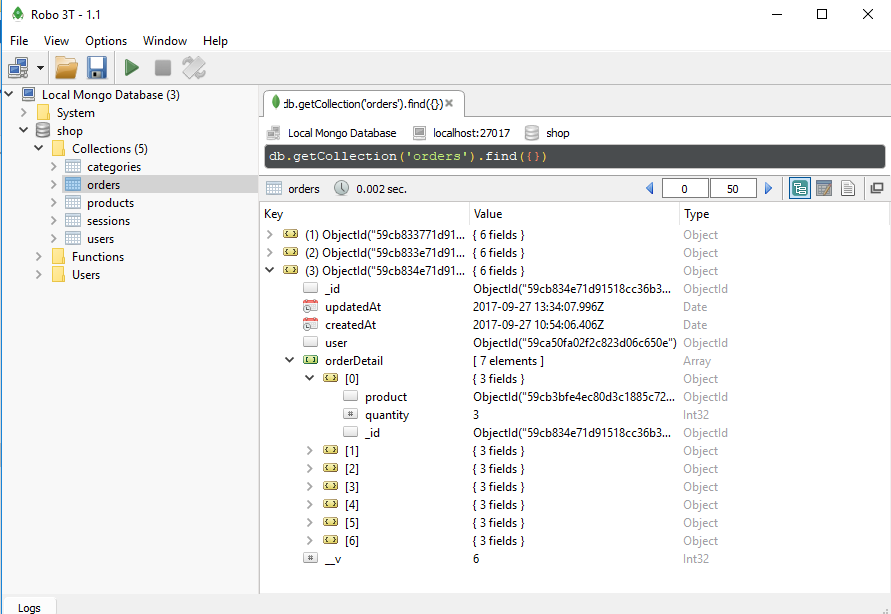‘Shop’ MongoDB database defines four collections; categories, orders, products, users. Sessions collection is MongoDB session store for Express.
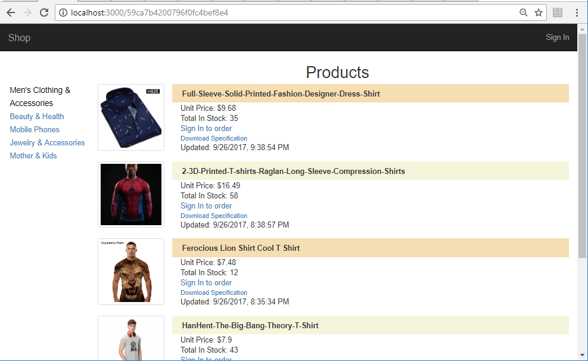This is the main page. You do not need to login to see products. The route is not protected. (Online Store uses React Route 4).
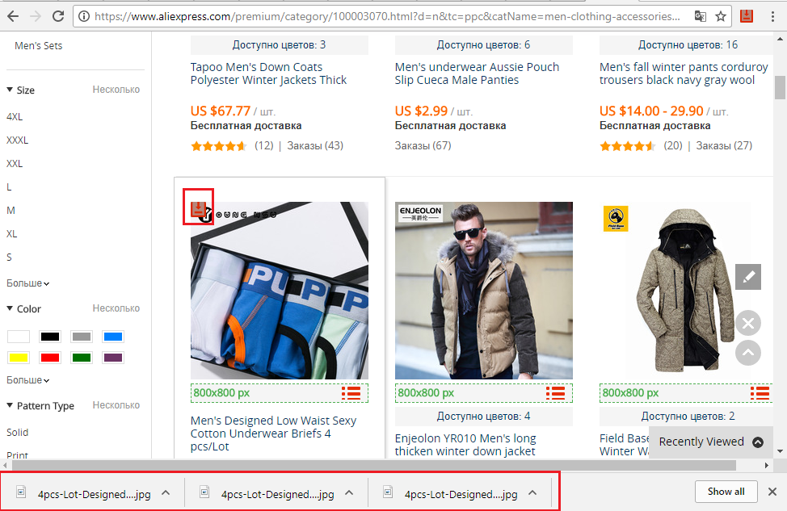Online Store products are taken from AliExpress site by installing ‘Download AliExpress product images’ Chrome extension. By selecting a product, you get all the pictures and variants on your hard drive.
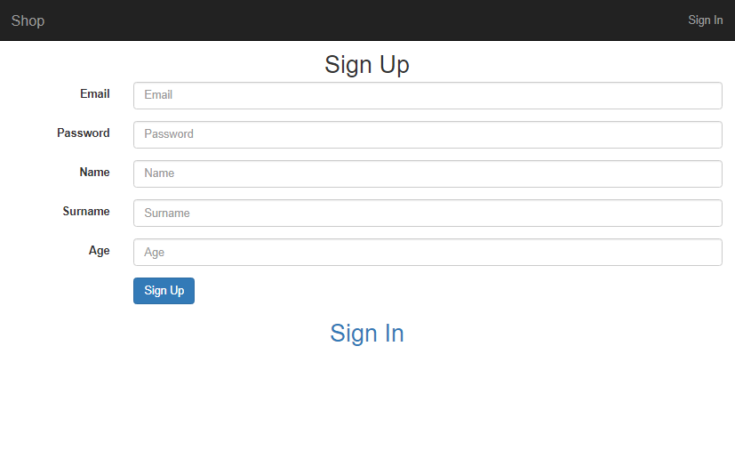This is the signup page. All the web forms of the online store (add product, edit category etc.) do not have client-side validation. The reason is to display all GraphQL error messages in the page.
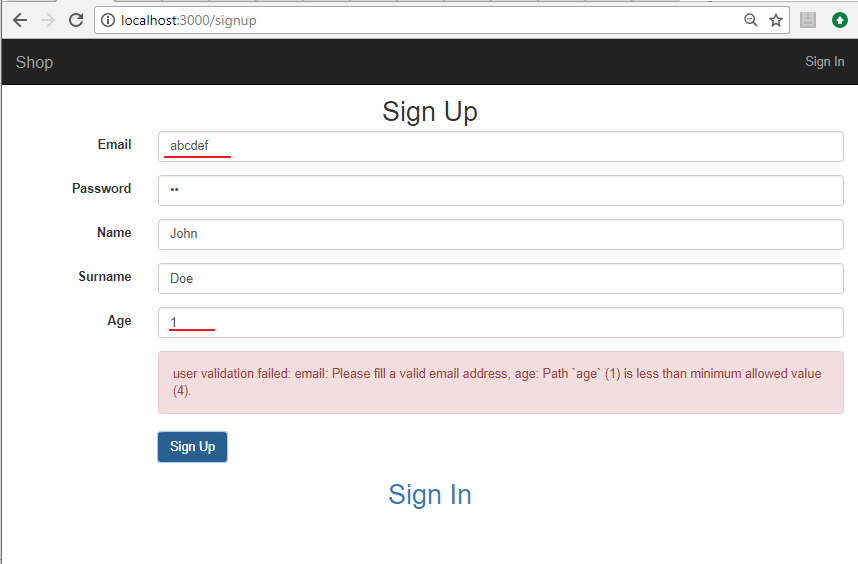Two validation errors; invalid email address and the minimum allowed value for age is 4 😊
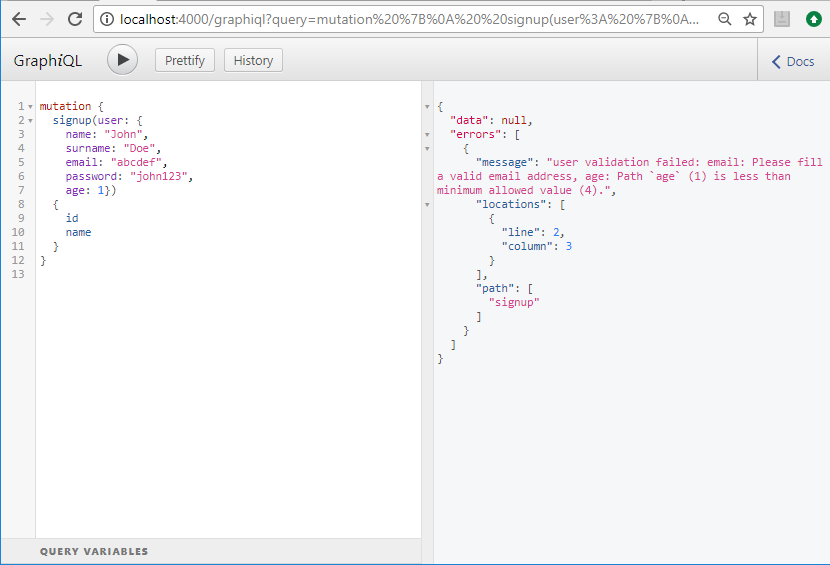The same error on graphical, running on server localhost:4000/graphiql
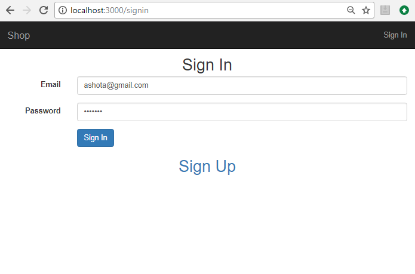Passport authentication middleware with passport-local strategy is used in the application. Users can authenticate with a username (in our case it is an email) and password. GraphQL and Passport are not really meant to be used together so you can look into the file auth.js for the implementation.
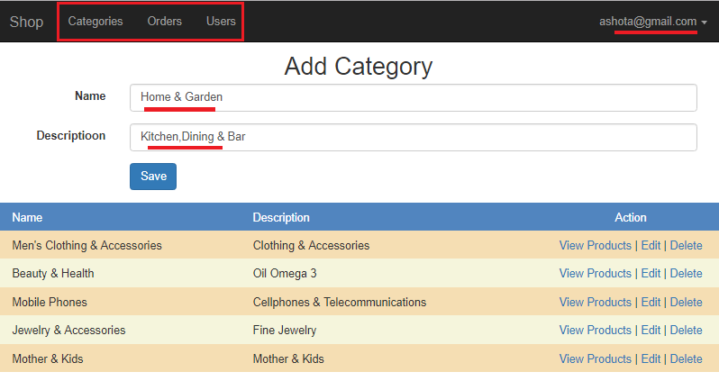Three menus Categories, Orders and Users are displayed after successful login. Let’s add category ‘Home & Garden’.
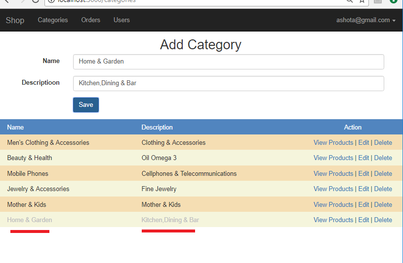
The Name and Description of a newly added category will be grayish for a half second then will turn into black. I would like to display Apollo’s Optimistic UI.
http://dev.apollodata.com/react/mutations.html#optimistic-ui
The application immediately updates the UI instead of waiting for the server response. We know the shape of the data we expect to receive from the server and we fake it until get a response.
To navigate category’s products page just click on ‘View Products’.
This is the product page of category ‘Clothing & Accessories’.
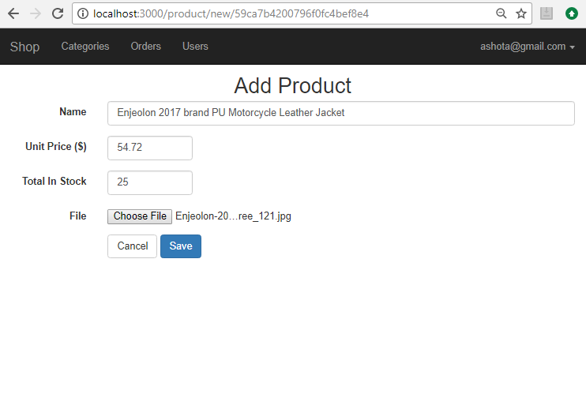Let’s add a product.
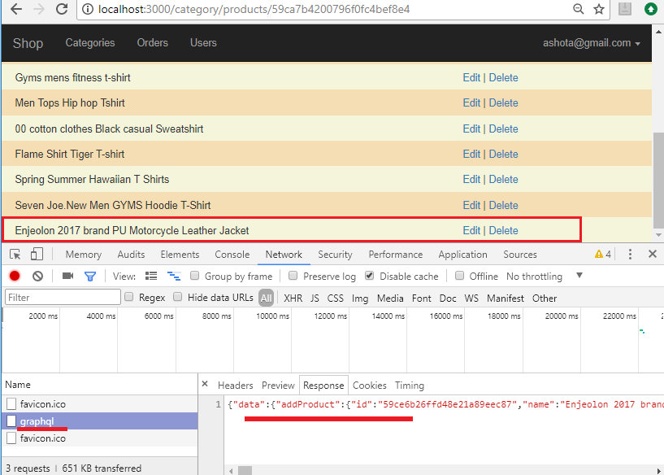
After saving the product the user is redirected to products page. You can see that the last graphql request was ‘addProduct’ mutation but newly added product can be seen on the page. No graphql query from the server to update the UI.
Apollo’s update is used to update the UI.
http://dev.apollodata.com/react/cache-updates.html#directAccess
Cached data are read from the store and the newly created product was added to the server. We have products in the cache as we clicked ‘Add Product’ link from the products page (Figure 10).
This time let’s add a product in a different way to see the difference.
This time refresh your browser before adding a product.
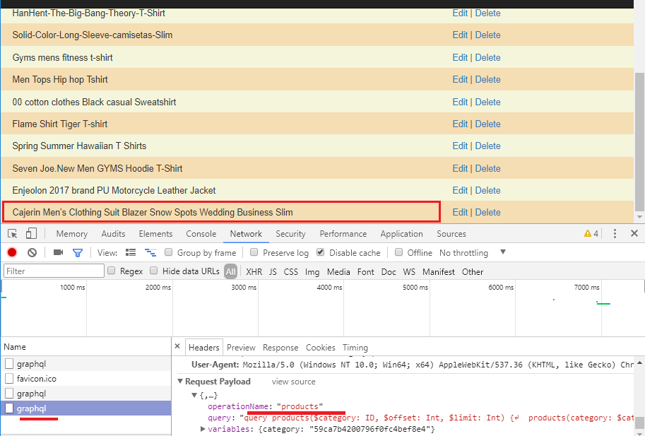
This time the product was added and the last graphql request was ‘products’ query to obtain products from the server because the products were not in the cache.
Another option instead of ‘update’ is ‘refetchQueries’ which is client-server roundtrip to refetch data. (The application uses refetchQueries’ as well)
http://dev.apollodata.com/react/cache-updates.html#refetchQueries
Here is the product update page for product update and picture deletion.
Online Store also makes use of ‘CustomResolvers’.
http://dev.apollodata.com/react/cache-updates.html#cacheRedirect
In some cases, a query requests data that already exists in the client store under a different key. A very common example of this is when you UI has a
list view and detail view that both use the same data.
A user is on 'Categories' page and clicking ‘Edit’.
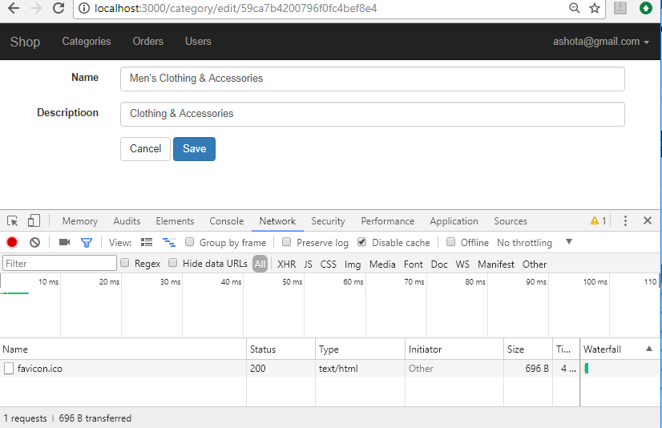No graphql request is made to retrieve the category data. The data is most likely already in the client cache, but because we requested different query, Apollo Client does not know that. We defined custom resolvers to telling Apollo client where to look for data.
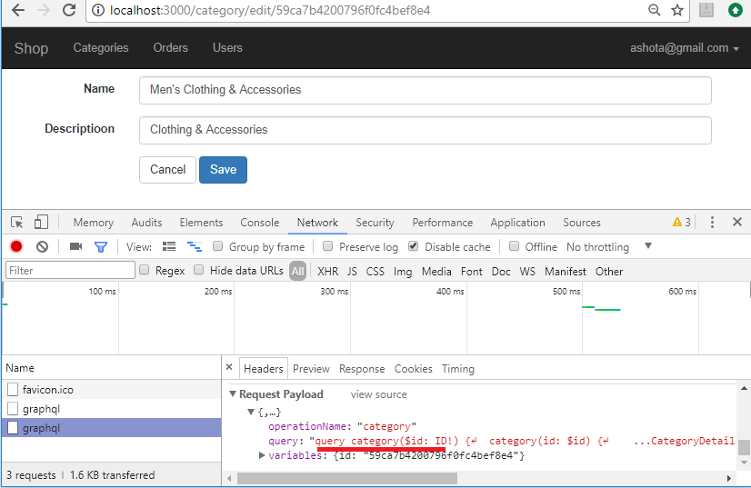If we comment out the resolver code and navigate from categories page to edit category page the same way, we will see that graphql request is made to obtain the category data.
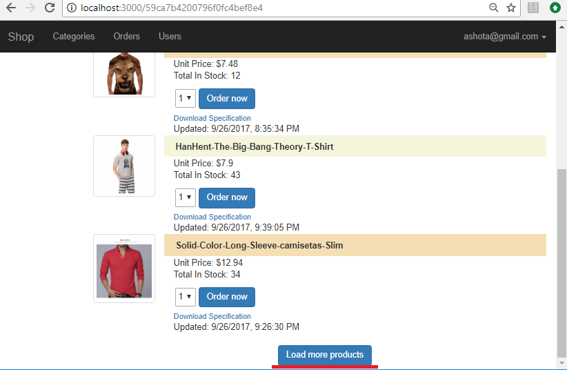Products page displays five products for each category. To load more products, you click ‘Load more products’ button.
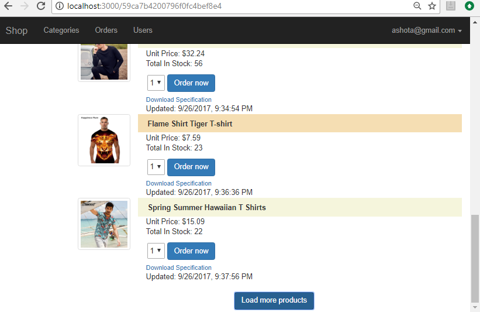
Next five products loaded.
http://dev.apollodata.com/react/pagination.html#fetch-more
This is done using Apollo ‘fetchMore’. This basically allows you to do a new GraphQL query and merge the result into the original result.
Each product has ‘Download Specification’ link. A user can download a product specification. A product is downloaded via GraphQL.
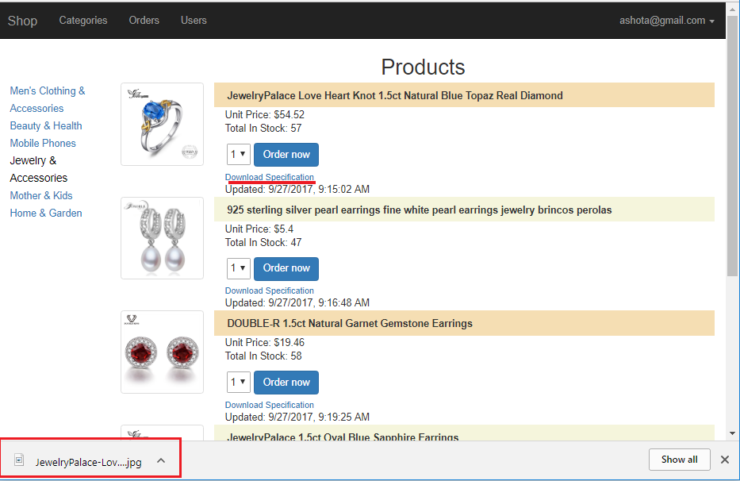You download the product picture by clicking the specification link. It is implemented like this not to make this demo application complicated (avoid new entries in MongoDB database and less coding). We still can test it on other types of files.
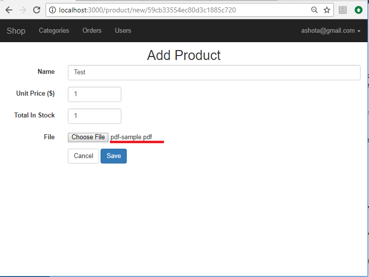Let’s add a new product and choose a pdf file. The product image will be broken as it is not an image but we can test product specification this way.
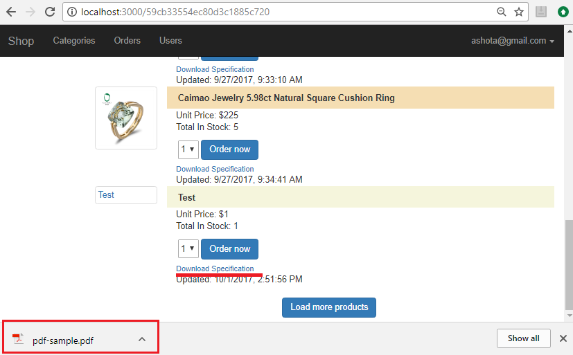The product has been added (the image is broken as it is a pdf file) and the pdf file is downloaded by clicking ‘Download Specification’ link.
Let’s make an order.
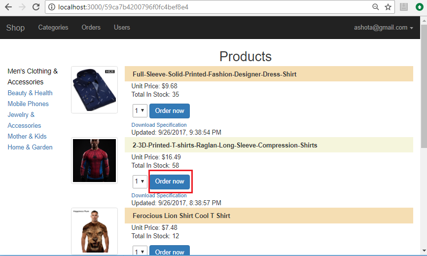Clicking ‘Order now’.
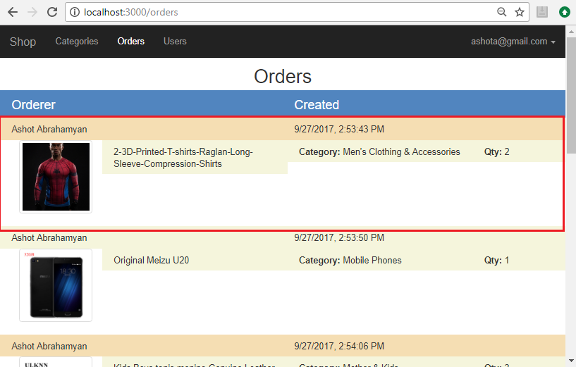The user will be redirected to his orders page and will see the orders. Each time when a user makes an order it creates a new one in this application for demo purposes. You will see one product for each order. You can add more products for the same order by keeping the order id on the client side. The functionality is implemented. Here is how to do it.
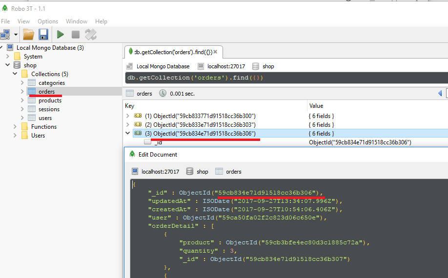Open orders collection. Choose an order to add more products. Copy the order id.
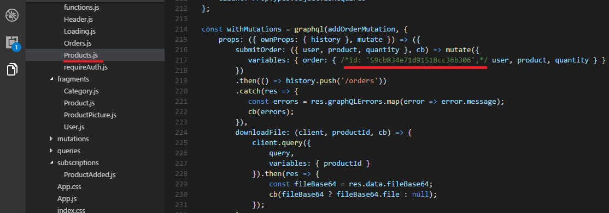Open Products.js paste the order id you copied and uncomment the comment. Now, each time you order a product it will go to the same order.
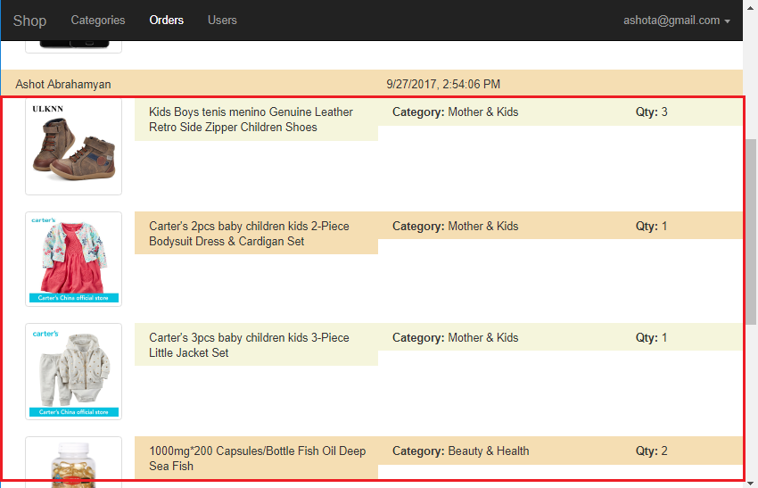Multiple products for the same order.
Sometimes it is required to load a page from the network. In Apollo, by default your component will try to read from the cache first, and if the full data for your query is in the cache then Apollo simply returns the data from the cache otherwise Apollo will execute your request using your network interface.
Let’s check it.
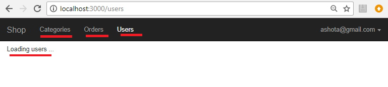Login into the application and click on ‘Categories’, ‘Orders’ and ‘Users’ menu and you will see ‘Loading …’ line before the actual data arrives. If you click the same links second time then no loading information will be displayed as data are already in the cache. It will be rendered from the cache; no graphql request will be made to retrieve data.
Suppose you want the ‘Orders’ page to always get the data from the server.
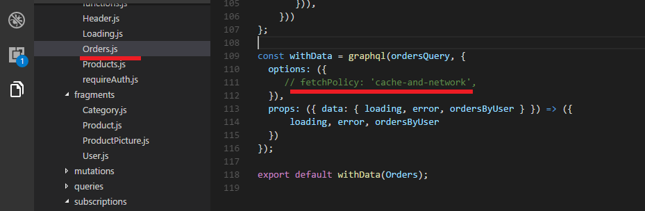Comment out `fetchPolicy: 'cache-and-network'` line and run the application.
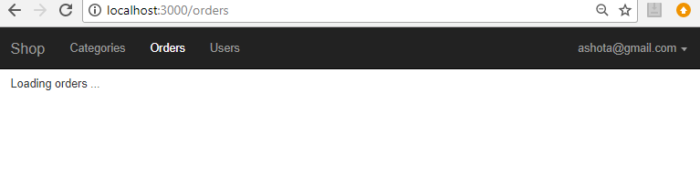
This time you will always see the ‘Loading orders…’ line when you click ‘Orders’ menu. Also, you can check the network tab to see the actual graphql query.
http://dev.apollodata.com/react/api-queries.html#graphql-config-options-fetchPolicy
The fetch policy is an option which allows you to specify how you want to your component to interact with the Apollo data cache.
Th application uses ‘cache-and-network’. This fetch policy will have Apollo first trying to read data from your cache.
If all the data needed to fulfill your query is in the cache then that data will be returned. However, regardless of
whether or not the full data is in your cache this fetchPolicy will always execute query with the network interface.
Sometimes we want to see real time updates in our application. It can be done via GraphQL Subscriptions. Via GraphQL
subscriptions the server sends data to clients when a specific event happens on the backend.
Subscriptions are usually implemented with WebSockets holding steady connection between server and the client.
Let’s see it in action.
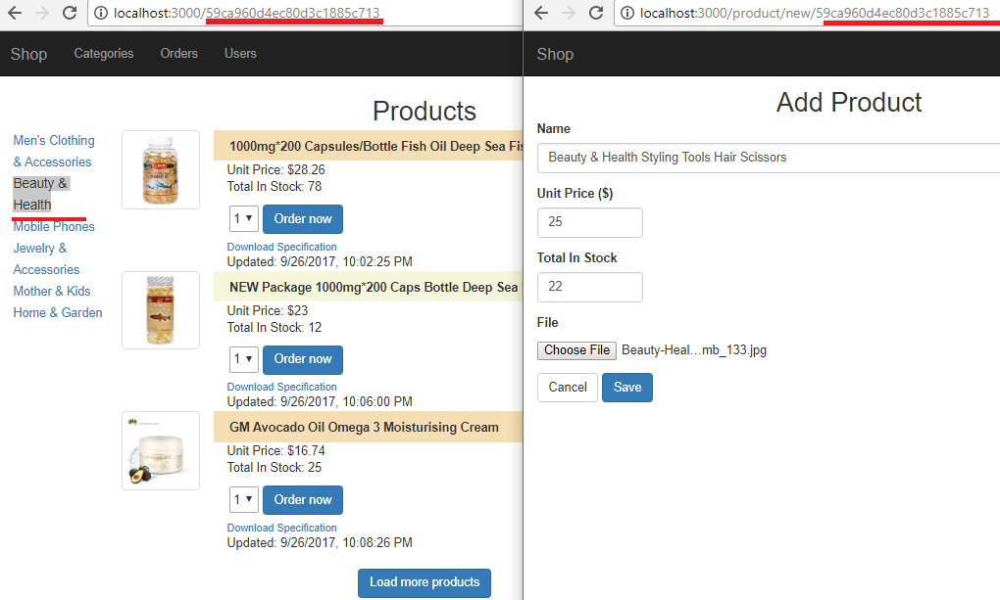Let’s open two browsers. One of them displays products under ‘Beauty & Health’, the other one is trying to add a new product in same category.
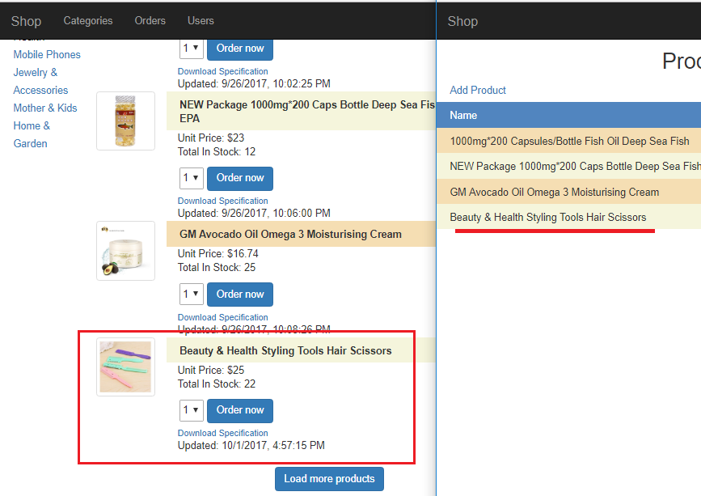
Once the product has been added, you will see it on the products list in same category.
http://dev.apollodata.com/react/subscriptions.html#subscribe-to-more
‘subscribeToMore’ is a convenient way to update the result of a single query with a subscription (used in the application).
When a product is removed from the category then it is also removed from the order page but order still remains.
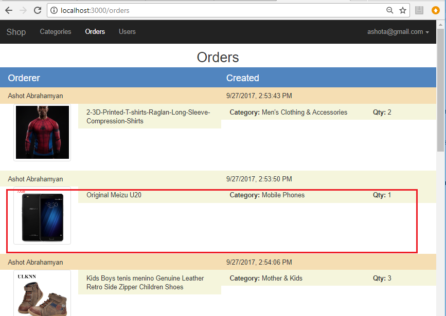Here is the ’Original Meizu U20’ product ordered.
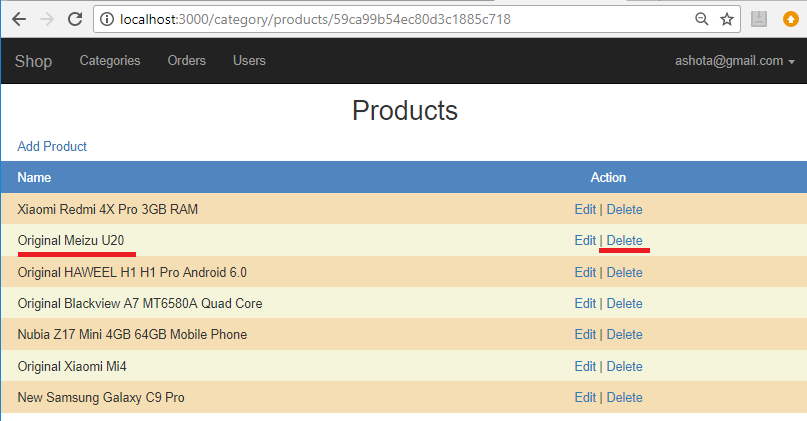Let’s delete that product.
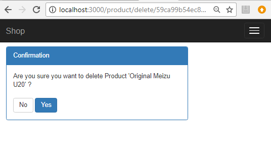Deleting.
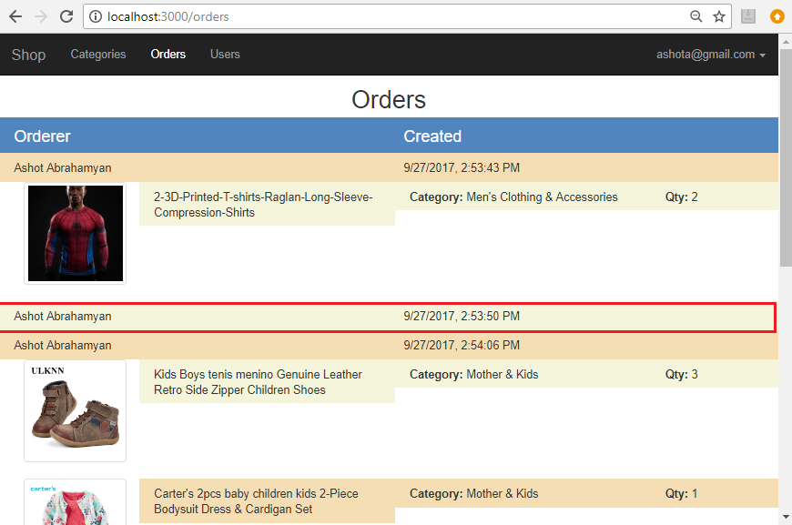Order without the product information.
In GraphQL field resolvers are just functions that are called independently of one another. There is no coupling between these resolvers, which makes your application flexible. If resolving a field on a type requires another query, then you will likely end up in a classic N+1 situation.
First let’s check in graphical.
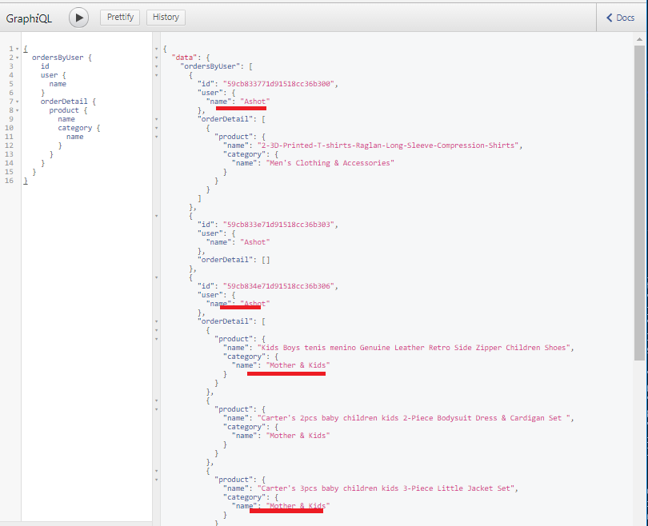Here is the orders query. You can see that orders are made by the same user. There are orders of the same category. Orders may have the same product.
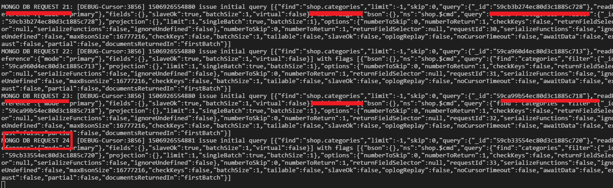With MongoDB logger, you will track MongoDB query requests. There are 24 requests. There is more than one request to get the same category information.
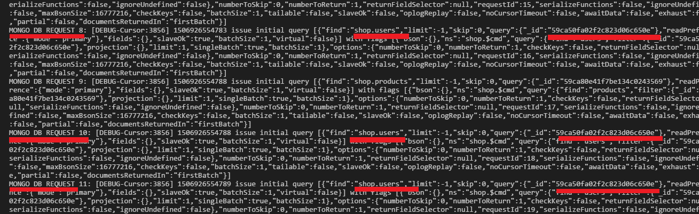
More than one request for the same user.
‘DataLoader’ library from Facebook will help to avoid unnecessary multiple requests to services like MongoDB. It supports query batching and caching out of the box.
https://github.com/facebook/dataloader
Let’s see MongoDB request with DalaLoader enabled in our application.
MongoDB requests are 10 now.